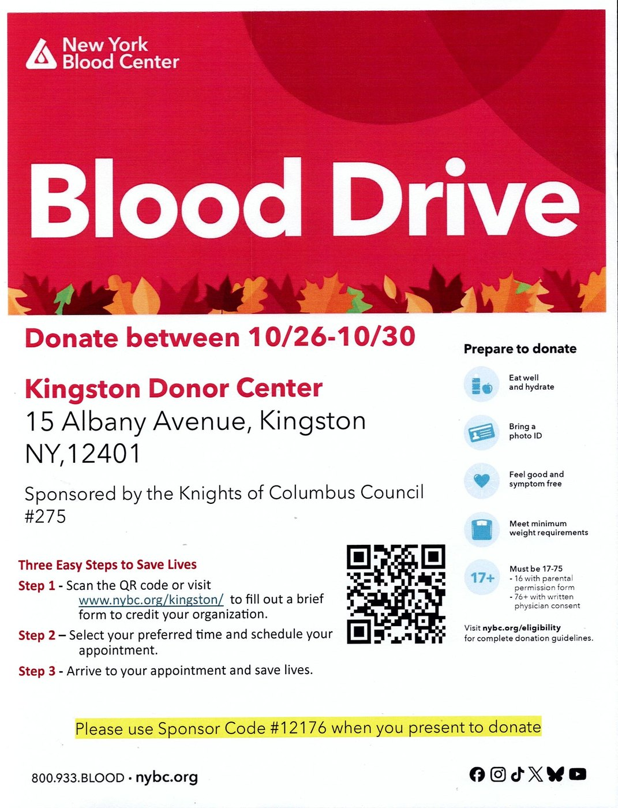

Happening now
Blood drive — donate by Friday
Monday 26 – Friday 30 October 2026 at the Kingston Donor Center, 15 Albany Avenue, Kingston, NY 12401. Sponsored by Kingston Council #275.
When you present to donate, give Sponsor Code #12176 so your donation is credited to the Council.
Three easy steps to save lives
- Visit nybc.org/kingston and fill in the brief form so your donation is credited to the Council.
- Choose a time and book your appointment.
- Come to your appointment and save lives.
You can also book by phone on 800.933.BLOOD (800 933 2566).
Before you come
- Eat well and drink plenty of water
- Bring photo identification
- Be feeling well and free of symptoms
- Donors must be aged 17–75 and meet the minimum weight requirement — 16-year-olds with a parental permission form, and donors 76 and over with written consent from their physician
Full guidelines are at nybc.org/eligibility.

Council calendar
Meeting dates
Council meetings are held on the first and third Mondays of each month at 7:00 PM, at Immaculate Conception School, 471 Delaware Avenue, Kingston.
The first meeting of the month is our business meeting. Changes to the schedule are announced at meetings and posted here. In the event of inclement weather, please call (845) 416-3397.
| Month | Dates | Notes |
|---|---|---|
| November 2026 | Monday 2nd · Monday 16th | |
| December 2026 | Monday 7th · Monday 21st | |
| January 2027 | Monday 4th · Monday 18th | Third Monday is Martin Luther King Jr. Day — to be confirmed |
| February 2027 | Monday 1st · Monday 15th |
Coming up
Coats for Kids
The drive is going well. The Council has bought in another rack of children’s coats, matched by a rack from the Supreme Council, and members are sorting donations as they come in. Collection boxes are at our parishes, and warm coats for children and adults are all welcome.
Car & Bike raffle
Tickets are still on sale at Herzog’s and Van Loan’s, and after Masses. Proceeds support the Council’s charitable work across Ulster County.
Christmas party
Members and their families are warmly invited. Please let us know you are coming so we can plan the numbers — call the Council on (845) 309-8546.
Advent essay contest
Our essay contest for young people returns this Advent, with awards presented to the winners in each grade. The theme will be announced shortly.
St. Nicholas Day
Our Keep Christ in Christmas celebration for the children of the parishes. The Council has ordered Christmas banners and Keep Christ in Christmas car magnets for the parishes.
Membership drive
Knights will speak briefly at Masses across our parishes about the work of the Council and how to join. If you have been meaning to ask, this is the easiest way.
Exemplification of the Third Degree
The membership drive culminates in a church exemplification of the Third Degree at Immaculate Conception. The date is being settled between 4 and 11 April.
Our programs through the year
The Council runs family, social, community, youth and charitable activities across the whole calendar. These are the ones you will see us at year after year.
Serving our neighbours
- Soup kitchen — Knights serve at the community soup kitchen, including the Darmstadt Shelter run by Family of Woodstock.
- Holy Family Outreach dinners — cooking and serving meals for those who need them.
- Coats for Kids and Coats for Folks — warm coats for children and adults across the county, every autumn.
- Blood drives — the Council sponsors drives at the Kingston Donor Center and hosts them at the Council Home.
- Ministry for the imprisoned.
For young people
- Soccer Challenge — the Knights of Columbus skills competition, open to boys and girls in our parishes.
- Children’s essay contest — held each Advent, students write on faith and citizenship, with awards presented to the winners in each grade.
- Support for Catholic education in Ulster County, including scholarships and awards to local Catholic schools.
Faith and fellowship
- St. Nicholas Day — our Keep Christ in Christmas celebration.
- Christmas party for members and their families.
- St. Joseph’s celebration in the spring.
- Communion Mass and breakfast.
- Summer picnic on the Hudson.
- March for Life bus trip to Washington, D.C.
- Immaculate Conception Bazaar.